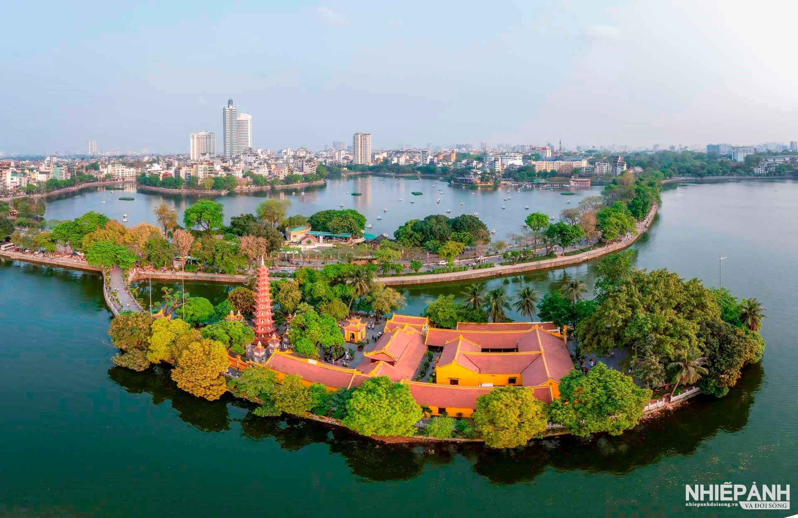
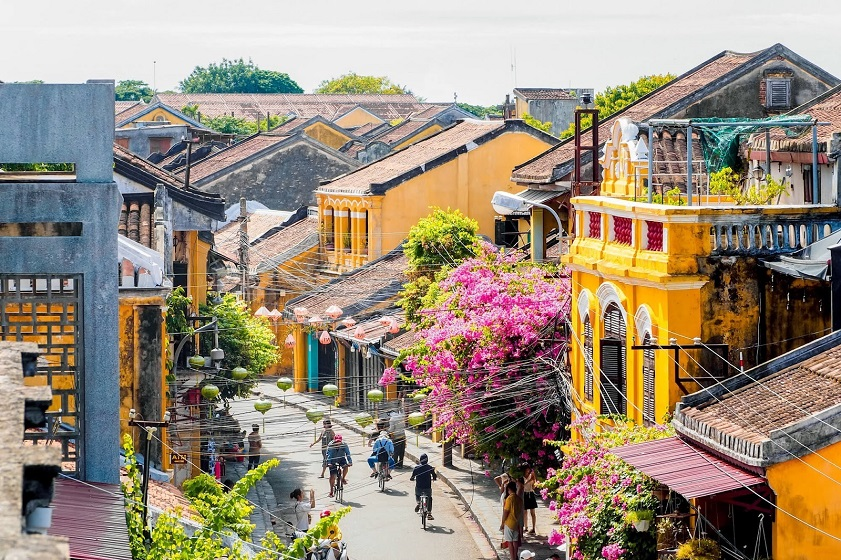
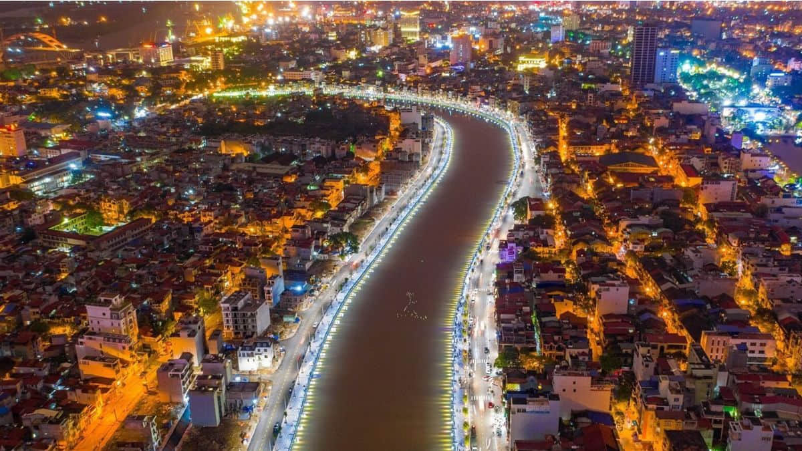
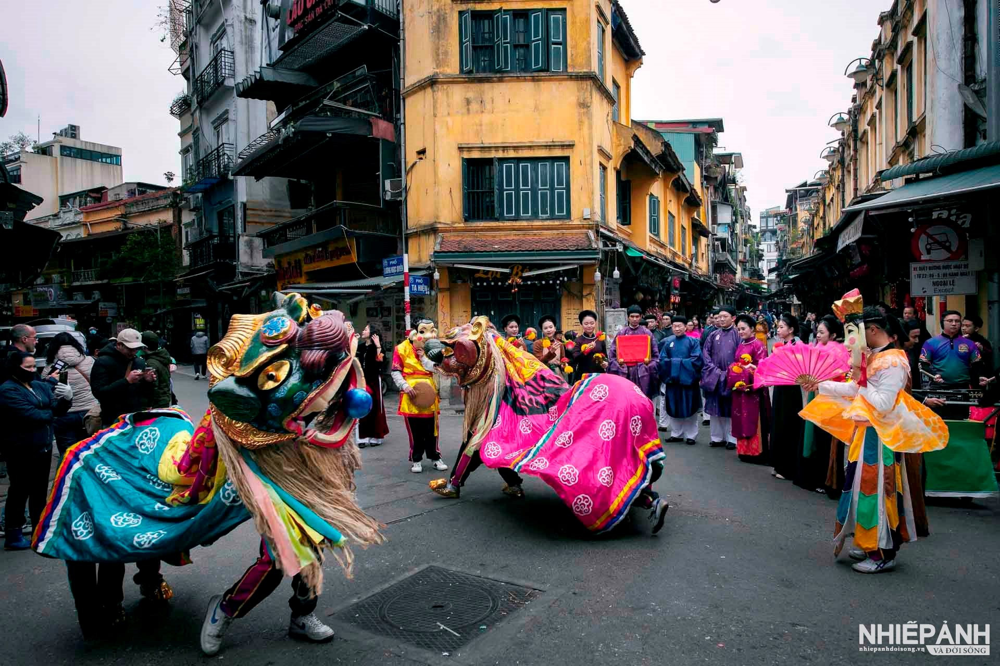

Việt Nam có nhiều thành phố xinh đẹp và thú vị. Mỗi thành phố đều có nét văn hóa, ẩm thực, kiến trúc và không khí riêng.




Mỗi thành phố ở Việt Nam đều mang một vẻ đẹp riêng, từ những con phố cổ kính đến những đô thị hiện đại và năng động.
Cùng khám phá những thành phố nổi tiếng với văn hóa, ẩm thực và những địa danh đặc sắc.
Việt Nam có nhiều thành phố xinh đẹp và thú vị. Mỗi thành phố đều có nét văn hóa, ẩm thực, kiến trúc và không khí riêng.


